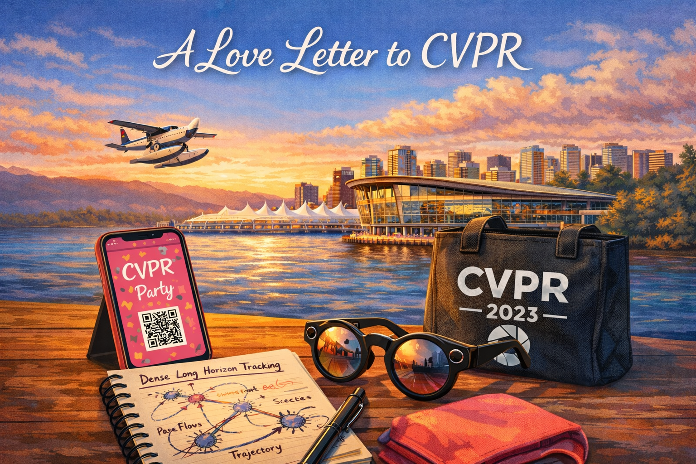

I finished my reviews for CVPR 2026 over the weekend, and it caused me to reflect on how special the CVPR community has been. Despite not having authored a paper at CVPR (yet, fingers crossed on our current submission!), I’ve gone every year since 2023 to host or participate in workshops, and it feels like my home conference. It’s very different from the venues I have published in (mostly ICLR and ECCV), which I attribute to the type of attendees and the academic stewardship of its industrial and corporate participants.
Unfortunately, between AV consolidation and the end of serious publishing by frontier labs, these corporate stewards appear to have recently died off. I hope a new wave of companies who view academia as an ideas engine and not as just a hiring pool emerge as new stewards who preserve CVPR’s special culture.
I still remember my first CVPR in 2023. It was hosted in the Vancouver convention center, featuring beautiful views of English Bay and the sights and sounds of the seaplane tours taking off and landing nearby. I was staying in a hotel with Ishan Khatri, my longtime friend and collaborator, and we were on the hunt for inspiration for our next paper — we had submitted ZeroFlow to the Argoverse Scene Flow Challenge at the Workshop on Autonomous Driving, where it won an award, but we didn’t really know where we were going to take this line of research next. Looking at the list of workshops, Ishan saw Laura Leal-Taixe, a TUM professor who was previously affiliated with Argo AI (our previous employer), was scheduled to present at a workshop on tracking. We walked in just before Adam Harley gave his presentation on Particle Tracking (PIPs). After Adam’s presentation was over, Ishan and I realized there were deep connections between the problems of particle tracking and scene flow — particle tracking is long horizon and sparse, while scene flow is short horizon and dense, but there lies a synthesis of the two in dense, long horizon tracking. This had a big impact on our research agenda. In a moment of excitement after the workshop coffee break, we sketched out the beginnings of a master plan that ultimately became the rest of my thesis and beyond. For example, EulerFlow followed directly from this, which poses a dense, long horizon optimization problem and consequently has particle tracking in 3D fall out for free.
As anyone who’s been to a conference knows, the conference isn’t just about posters and workshops — there’s also evening company and university after parties. Few things in life are more fun than throwing all your friends in a giant group chat to share party locations and bootleg screenshots of personal invites, hoping to make it past the door. The CVPR 2023 Snapchat party was hosted at a swanky bar; running the door was a very angry but very stupid bouncer. Distracted by yelling “no invite, no entry” at the rest of the line, he did not catch on that every member of our group had shown him the exact same invite on the exact same bright pink iPhone that we handed down the line. Inside, I got to try the first public prototype of the Snapchat Spectacles AR glasses, and spend the better part of an hour talking to one of the SLAM engineers about the ins and outs of getting robust SLAM to run on a tiny CPU inside the glasses.
At the CVPR 2024 Waymo party, we didn’t have an invite, but we managed to convince another AV recruiter to help get us in and introduce us to Drago, the head of Waymo Research, where we showed him the early results of EulerFlow doing point tracking on a bird just from raw LiDAR data. We tried to tell him this was the future of scene flow, but he was deeply skeptical of this claim. Afterwards, we ran into Adam Harley at the Apple party, where we showed him the same results and credited his PIPs presentation at the workshop the year prior as inspiration, and talked about his job search and what he was working on next.
In these stories, the people involved all genuinely love research. The atmosphere is collegial, focused on the science and thinking about the big problems in computer vision, and I think an enormous amount of credit for this should go to the industrial labs and companies that have sponsored, published, and actively fostered the CVPR community. For example, the Autonomous Vehicle companies were excellent at engaging with academia — they released many datasets (NuScenes, Argoverse, Waymo Open) and funded challenges to ensure the community remained valuable, active participants in solving real computer vision problems, in addition to publishing real state-of-the-art with frontier results. Similarly, many of the vision teams in the industrial AI labs have produced enormously impactful publications and artifacts; the Segment Anything series, DINO series, and Ego4D dataset from FAIR are such incredibly valuable primitives that have fundamentally reshaped modern CV. Despite requiring significant corporate resources to construct these datasets and artifacts, the companies were very open about what they were working on and where their challenges remained.
By comparison, I think ICLR, NeurIPS, and other large generic ML conferences have lost this community culture — the vast majority of papers are uninteresting variations of finetuning an LLM to do some random task, everyone knows that all actual frontier work is being done at labs that don’t publish anymore, and many of the attendees are primarily in attendence to find a job or extract secrets to inform their investment theses. The large tech companies still have corporate parties, but they are just recruitment events, indistinguishable from the parties hosted by the many HFT / prop trading firms trying to convince ML talent to go work in finance.
Unfortunately, I fear it’s currently a bit of an inevitability that CVPR will go down this path. Google DeepMind and FAIR have ceased to be serious publishing units, and Waymo and Motional’s research orgs have collapsed as AV has solidified into a product. I fear this means the good corporate stewardship that served as an important bridge between industry and academia has been lost. In its place, I expect to see video generation and world model companies with hyper-valuations (and hyper-exectations) take over, and with them bring the secretive, competitive, closed lab culture of generic ML conferences. Academic participation in real problems will collapse, leaving behind a trail of uninteresting finetuning papers and a fractured community.
I hope I am wrong. I hope we see a new wave of companies invest in academic stewardship to ensure CVPR continues to be the conference that I know and love. I think the academic community is an excellent source of genuinely interesting and useful ideas, and it’s in the long term interest of companies to find ways to harness this ideas engine to make breakthroughs on hard problems that would take far longer if tackled only by secretive internal R&D teams.
I will see you all in June at CVPR 2026, and let me know if you have any exciting party invites!
{kind=link}